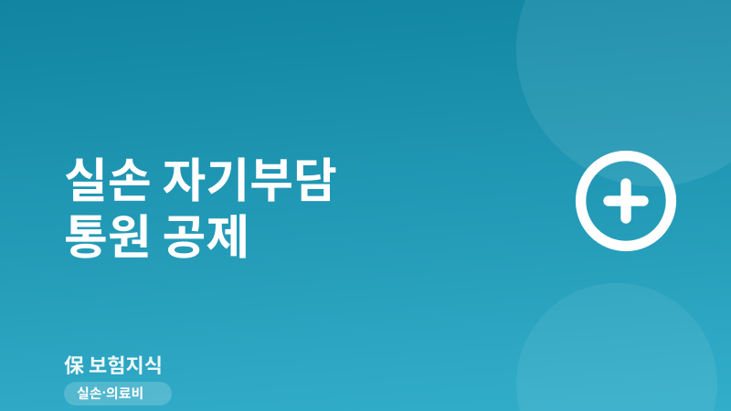
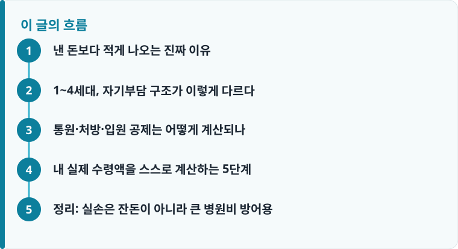

실손은 총 진료비가 아니라 자기부담금(공제금액)을 제외한 잔액을 지급하므로, 진료비가 작을수록 실제 수령액은 0원에 가까워집니다.
자기부담 비율은 가입 시기로 정해집니다. 1세대는 거의 없고, 2세대 10~20%, 3세대 급여10·비급여20(3대비급여 30), 4세대 급여20·비급여30입니다.
통원은 병원 종별 정액 공제(의원 1만·병원 1.5만·상급 2만)와 정률 중 큰 금액을 빼므로, 의원 진료는 대부분 남는 금액이 거의 없습니다.
낸 돈보다 적게 나오는 진짜 이유
병원비 4만 원을 청구했는데 2만 원 남짓만 입금되면 누구나 당황합니다. 하지만 이는 오류가 아니라 실손보험의 기본 설계입니다. 실손은 ‘실제 부담한 의료비 전액’을 주는 상품이 아니라, 그중에서 자기부담금(공제금액)을 먼저 빼고 남은 금액만 지급하도록 만들어졌습니다. 자기부담금을 두는 이유는 사소한 진료까지 전부 보험금으로 처리되면 과잉 진료와 보험료 인상이 반복되기 때문입니다. 그래서 실손은 태생적으로 소액 진료에 약하고, 큰 병원비일수록 진가를 발휘합니다.
중요한 점은 이 공제 방식이 사람마다 다르다는 것입니다. 같은 감기 진료라도 옆 사람은 만 원을 돌려받고 나는 한 푼도 못 받을 수 있는데, 그 차이는 대부분 가입 시기(세대)에서 옵니다. 실손은 판매 시기에 따라 1세대부터 4세대까지 나뉘고, 세대마다 자기부담 비율과 공제 구조가 크게 다릅니다. 그러니 ‘실손이 왜 이것밖에 안 나오지’를 이해하려면 먼저 내 증권이 몇 세대인지부터 확인해야 합니다. 세대별 손익을 저울질하고 있다면 4세대 실손 전환 손익 글을 함께 보면 판단이 쉬워집니다.
1~4세대, 자기부담 구조가 이렇게 다르다
실손의 자기부담은 가입 시점에 이미 확정됩니다. 1세대(2009년 9월 이전)는 자기부담이 매우 적거나 사실상 없는 상품이 많습니다. 입원비를 100% 보장하거나 소액의 정액 공제만 두는 식이어서, 지금 기준으로 보면 가장 보장이 후한 세대입니다. 2세대(2009년 10월~2017년 3월)부터 급여·비급여에 자기부담률이 도입되어, 선택형은 10%, 표준형은 20%를 본인이 부담합니다.
3세대(착한실손, 2017년 4월~2021년 6월)는 기본형에서 급여 10%·비급여 20%를 부담하되, 과잉 진료 논란이 컸던 3대 비급여(도수치료·체외충격파·증식치료 / 비급여 주사 / 비급여 MRI)를 특약으로 떼어내고 자기부담을 30%로 높였습니다. 도수치료나 비급여 주사를 자주 받는다면 이 특약의 한도와 횟수가 핵심인데, 자세한 기준은 도수치료·비급여 주사 한도에서 확인할 수 있습니다. 4세대(2021년 7월 이후)는 급여 자기부담 20%, 비급여 30%로 부담이 더 커졌고, 비급여를 특약으로 완전히 분리한 뒤 비급여 이용량에 따라 다음 해 보험료를 최대 할증하거나 할인하는 구조를 새로 넣었습니다. 즉 4세대는 병원을 적게 갈수록 보험료로 보상받는 설계입니다.
정리하면 세대가 뒤로 갈수록 자기부담이 커지는 흐름입니다. 내 부담률이 10%인지 30%인지에 따라 같은 진료비라도 수령액이 두세 배 벌어지므로, 증권의 ‘자기부담금’ 조항을 반드시 눈으로 확인해야 합니다. 여기에 같은 병을 여러 실손으로 중복 가입한 경우라면 두 회사가 나눠서 보상하는 비례보상이 적용되니 실손 중복가입·비례보상 원리도 함께 알아두는 것이 좋습니다.

통원·처방·입원 공제는 어떻게 계산되나
실제 수령액을 가늠하려면 통원(외래)과 입원의 공제 방식이 다르다는 점을 알아야 합니다. 통원 외래는 두 가지 기준 중 큰 금액을 공제한 뒤 나머지를 줍니다. 하나는 병원 종별 정액 공제로, 흔히 의원 1만 원, 병원 1.5만 원, 상급종합병원 2만 원을 뺍니다. 다른 하나는 정률 공제로 급여 20%·비급여 30%처럼 진료비에 비율을 곱한 금액입니다. 이 둘 중 더 큰 쪽을 빼기 때문에, 진료비가 작을 때는 정액 공제가 걸려 남는 돈이 거의 없습니다.
예를 들어 의원에서 외래 진료로 실제 부담이 1만 원 안팎이라면, 의원 정액 공제 1만 원이 거의 그대로 빠져 실제 지급액이 0원에 가까워집니다. 3만 원을 냈다면 정액 1만 원과 정률(예: 급여 20%면 6천 원) 중 큰 1만 원이 빠져 2만 원가량이 남는 식입니다. 처방조제는 별도로 건당 8,000원(또는 정률 중 큰 금액)을 공제하므로, 약값이 몇 천 원대라면 이 역시 받기 어렵습니다. 감기·가벼운 진료로 실손 재미를 못 보는 이유가 바로 이 정액 공제 구조에 있습니다.
입원은 통원과 달리 정액 공제가 없고 정률로만 자기부담합니다. 4세대 기준 급여 20%·비급여 30%를 본인이 내되, 급여 부분은 연간 자기부담 상한(예: 200만 원)이 있어 그 이상 발생한 급여 의료비는 전액 보장합니다. 큰 수술로 급여 본인부담이 몇 백만 원이 나와도 상한선 위쪽은 실손이 받쳐 준다는 뜻입니다. 여기에 통원은 회당 한도(예: 25만 원)와 연간 통원 일수 한도(예: 180회), 입원은 연간 보장한도(예: 5,000만 원) 같은 한도가 세대·약관별로 정해져 있습니다. 이 숫자들은 상품마다 달라서, 청구가 거절되거나 삭감되는 사례가 궁금하다면 실손 청구 거절 사례를 살펴보면 실제 감을 잡기 좋습니다.
작성·검수 기준
이 글은 특정 보험사 상품을 권유하기 위한 것이 아니라, 실손보험의 자기부담금과 통원·입원 공제 구조를 이해하도록 돕기 위해 작성한 일반 정보입니다. 세대 구분, 자기부담 비율(10·20·30%), 정액 공제액(의원 1만·병원 1.5만·상급 2만), 처방 8,000원, 연간 상한 200만 원, 통원 180회, 회당 25만 원 등의 수치는 대표적인 예시이며 가입 세대와 개별 약관에 따라 달라질 수 있습니다.
정확한 자기부담률과 한도는 본인 증권의 약관·상품설명서로 확인하는 것이 가장 정확하며, 전환을 고민 중이라면 4세대 실손 전환 손익을 함께 검토하기를 권합니다.
내 실제 수령액을 스스로 계산하는 5단계
복잡해 보이지만 순서대로 따라가면 대략적인 수령액을 스스로 가늠할 수 있습니다. 청구 전에 아래 다섯 단계를 짚어 보세요.
- 증권에서 가입일을 찾아 내 실손이 1~4세대 중 어디인지, 자기부담률이 몇 %인지 확인합니다.
- 진료비를 급여와 비급여로 나눠 각각의 금액을 파악합니다(진료비 세부내역서 활용).
- 통원이면 병원 종별 정액 공제(의원 1만·병원 1.5만·상급 2만)와 정률 공제를 각각 계산해 큰 금액을 뺍니다.
- 처방조제는 건당 8,000원(또는 정률 중 큰 금액)을 별도로 공제하고, 입원이면 정률과 연간 상한(예: 200만 원)을 적용합니다.
- 회당 한도(예: 25만 원)·연간 횟수(예: 180회)·입원 보장한도(예: 5,000만 원)를 넘지 않는지 확인해 최종 수령액을 추정합니다.
정리: 실손은 잔돈이 아니라 큰 병원비 방어용
실손이 낸 돈보다 적게 나오는 것은 고장이 아니라 자기부담금이라는 설계 때문입니다. 감기 진료 같은 소액에서는 정액 공제에 막혀 거의 못 받지만, 수술·입원처럼 비용이 커질수록 자기부담 상한과 높은 보장한도 덕분에 실손의 효과가 극대화됩니다. 그러니 실손은 ‘병원 갈 때마다 잔돈 챙기는 상품’이 아니라 큰 병원비가 닥쳤을 때 가계를 지키는 방어막으로 이해하는 것이 맞습니다. 내 세대의 자기부담 구조만 정확히 알아도 청구 후 실망을 크게 줄일 수 있습니다.
다른 보험 정보 글이 궁금하다면 보험지식 블로그에서 이어 읽어 보세요. 가입 전에는 반드시 약관과 상품설명서를 확인하는 것이 가장 안전한 방법입니다.